التغير اليومي في درجة حرارة سطح المريخ باستخدام مهمة الإمارات لاستكشاف المريخ: مقارنة مع قياسات مركبتي Curiosity وPerseverance الجوالتين
الملخص
للمرة الأولى، يزوّدنا جهاز مطياف الإمارات للمريخ بالأشعة تحت الحمراء (EMIRS) على متن مهمة الإمارات لاستكشاف المريخ (EMM) “الأمل" بقياسات لدرجة حرارة المريخ عند جميع الأزمنة المحلية، مع تغطية لمعظم الكوكب. ونتيجة لذلك، أصبح من الممكن الآن مقارنة قياسات درجة حرارة السطح المأخوذة من المدار بتلك المأخوذة من السطح بواسطة المركبات الجوالة خلال الفترة الزمنية نفسها. نستخدم بيانات التغير اليومي في درجة الحرارة من مجموعة محطة رصد البيئة الخاصة بالمركبة الجوالة (REMS) على متن مختبر علوم المريخ (MSL) “Curiosity"، ومن مجموعة محلل الديناميات البيئية للمريخ (MEDA) على متن المركبة الجوالة Mars 2020 “Perseverance"، بين يونيو وأغسطس 2021، ونقارنها برصدات EMIRS وتقديرات نموذج قاعدة بيانات مناخ المريخ (MCD). نبيّن أنه، على الرغم من أن الاتجاه العام لتغير درجة الحرارة متوافق بدرجة ممتازة بين المهمات، فإن قياسات EMIRS أدنى منهجياً ليلاً مقارنة بقياسات Mars 2020. وقد أسهمت الدقة المكانية الأقل لـ EMIRS مقارنة بالمركبات الجوالة، وما ترتب عليها من انخفاض في متوسط العطالة الحرارية للمناطق المرصودة في هذه الحالة تحديداً، إسهاماً رئيسياً في هذا التباين، إلى جانب عوامل أخرى. ونناقش دلالات هذه النتائج في تحسين فهمنا لمناخ المريخ، وهو ما من شأنه أن يؤدي إلى نمذجة أفضل للتنبؤ المحلي بالطقس، بما يفيد المهمات الروبوتية والمأهولة المستقبلية.
keywords:
الكواكب والأقمار: الكواكب الأرضية – الكواكب والأقمار: الأسطح – المركبات الفضائية1 المقدمة
إن تحول المريخ من كوكب دافئ ورطب ذي ظروف ربما كانت صالحة للسكن إلى كوكب بارد وجاف كما نراه اليوم يمثل مجالاً نشطاً للبحث لدى وكالات الفضاء حول العالم (Vago et al., 2015; Zurbuchen, 2017; Bhardwaj, 2014; Amiri et al., 2022). ولا تقتصر أهمية بحث هذا التحول على فهم المريخ فحسب، بل تمتد إلى تمكيننا من فهم تطور الأرض والكواكب الأخرى في النظام الشمسي وما وراءه على نحو أفضل (Sagan and Mullen, 1972; Jakosky, 2021). وتوفر لنا مجموعة من العمليات الجوية والسطحية الجارية حالياً على المريخ مؤشرات إلى هذا التحول الطويل الأمد للكوكب. وتكتسب دراسة التغير اليومي والموسمي في درجة حرارة سطح المريخ أهمية أساسية بسبب دورها المحوري في التحكم في عدد من العمليات السطحية وتحت السطحية الضحلة والعمليات الجوية السفلى على الكوكب، وتأثيرها في الطقس والمناخ وفي الهروب النهائي للمواد المتطايرة من الغلاف الجوي (Petrosyan et al., 2011).
أُجريت قياسات درجة حرارة السطح في الماضي من مركبات مدارية، مثل جهاز مطياف الانبعاث الحراري (TES) على متن Mars Global Surveyor (MGS) (Christensen et al., 2001)، وجهاز مطياف فورييه الكوكبي (PFS) (Formisano et al., 2005) على متن Mars Express (MEX)، وقناة الأشعة تحت الحمراء الحرارية المسماة تكريماً للأستاذ Vassilii Ivanovich Moroz (TIRVIM)، وهي جزء من مجموعة كيمياء الغلاف الجوي (ACS) على متن ExoMars Trace Gas Orbiter (TGO) (Korablev et al., 2018)، وMars Reconnaissance Orbiter/Compact Reconnaissance Imaging Spectrometer for Mars (MRO/CRISM) (He et al., 2022)، وMars Odyssey/Thermal Emission Imaging System (MO/THEMIS) (Edwards et al., 2018). كما أُجريت مثل هذه القياسات بواسطة هابطات ومركبات جوالة، مثل هابطتي Viking 1 و2 (Hess et al., 1977)، ومركبتي استكشاف المريخ الجوالتين (MER)، Spirit وOpportunity (Spanovich et al., 2006)(Mason and Smith, 2021)، ومحطة رصد البيئة الخاصة بالمركبة الجوالة (REMS) على متن مختبر علوم المريخ (MSL) “Curiosity" (Gómez-Elvira et al., 2012)(Martínez et al., 2021)، ومحلل الديناميات البيئية للمريخ (MEDA) على متن المركبة الجوالة Mars 2020 “Perseverance" (Rodriguez-Manfredi et al., 2021)(Martinez et al., 2022)، وحزمة التدفق الحراري والخصائص الفيزيائية (HP3) لمهمة InSight (Spohn et al., 2018)(Piqueux et al., 2021). وعلى الرغم من أن القياسات الساتلية، بحسب المدار، تمتاز بالتغطية الجغرافية، فإنها تعاني نقصاً في تغطية الزمن المحلي. وفي المقابل، توفر المركبات الجوالة قياسات عند جميع الأزمنة المحلية، إلا أن قياساتها محدودة جغرافياً. وتهدف مهمة الإمارات لاستكشاف المريخ (EMM) أو “الأمل" إلى سد هذه الفجوة في الرصدات (Almatroushi et al., 2021).
يتمثل أحد الأهداف الرئيسة لـ EMM في توفير رؤية عالمية للمريخ على المقاييس الزمنية اليومية والموسمية. فمدار EMM الفريد يمكّنها من رصد التوزيع المكاني لدرجة حرارة السطح وما قرب السطح في معظم أنحاء الكوكب عند جميع الأزمنة المحلية (Amiri et al., 2022; Almatroushi et al., 2021; Edwards et al., 2021). كما يتيح قياسات لتغيرات درجة الحرارة اليومية على مدى يوم مريخي كامل مع تغطية شبه مكتملة للكوكب بأكمله. وبما أننا نستطيع رصد تغيرات درجة الحرارة اليومية في معظم المواقع على المريخ، فإن ذلك يفتح فرصة للمقارنة المباشرة بين الرصدات المدارية والرصدات المأخوذة من سطح المريخ.
في هذه الرسالة، نعرض تغير درجة الحرارة اليومي في معظم أنحاء الكوكب كما قاسه EMM من المدار، ونقارنه بقياسات سطحية أجرتها مركبتا MSL (Gómez-Elvira et al., 2012) وMars 2020 (Rodriguez-Manfredi et al., 2021) الجوالتان خلال الفترة الزمنية نفسها. ونصف عدداً من العوامل التي قد تؤدي إلى هذه الفروق في القياسات، ونقترح حلولاً لها. كما نقارن هذه القياسات بقاعدة بيانات مناخ المريخ (MCD) (Millour et al., 2018) ونناقش دلالاتها لتحسين نمذجة طقس المريخ ومناخه.
2 قياسات المركبات الفضائية
2.1 المركبة المدارية: EMIRS/EMM
جهاز مطياف الإمارات للمريخ بالأشعة تحت الحمراء (EMIRS) (Edwards et al., 2021) على متن EMM هو مطياف بتحويل فورييه للأشعة تحت الحمراء (FTIR) يرصد في نطاق الأطوال الموجية 6-100 m. وقد صُمم لتوفير قياسات للغلاف الجوي السفلي وسطح المريخ عبر إجراء رصدات حرارية بالأشعة تحت الحمراء لقرص الكوكب. ويوفر قياسات يومية على امتداد الكرة الكوكبية كلها على مقاييس زمنية دون موسمية. تبلغ الفترة المدارية لـ EMM مقدار 55 ساعة، مع حضيض يبلغ 20,000 كم وأوج يبلغ 43,000 كم. ويجري 20 رصدة في كل مدار، أو 60 رصدة في الأسبوع، حيث تستغرق الرصدة الواحدة 29 دقائق عند الحضيض و11 دقائق عند الأوج. ويستغرق 4 مدارات، أو أقل من 10 أيام، للحصول على التغطية العالمية عند جميع الأزمنة المحلية. وتتراوح الدقة بين 100 و300 كم/بكسل (قطراً) مع زاوية انبعاث تصل إلى 70. وتحتوي منتجات بيانات المستوى 2 (L2) على الإشعاعية المعايرة ودرجة حرارة السطوع. أما منتجات المستوى 3 (L3)، المستخدمة في هذه الدراسة، فهي مشتقة من L2 وتتضمن درجات حرارة سطحية مصححة، إلى جانب كميات أخرى. وتُستخرج درجات حرارة السطح (L3) باستخدام عملية مؤلفة من ثلاث خطوات (Edwards et al., 2021): أولاً تُسترجع درجات حرارة الغلاف الجوي من نطاق 15 m لـ CO2، ثم تُلائم سماكة العمق البصري للغبار والأعماق البصرية لهباء جليد الماء، وأخيراً تُلائم سماكة عمود بخار الماء. وتُكرر عملية الاسترجاع هذه حتى التقارب، وتُستخدم مقاييس ضبط الجودة لضمان جودة المنتجات النهائية المسترجعة. وتظهر مقارنة بين قياسات L2 وL3 في الشكل A1 في الملحق.
أُدخلت المركبة المدارية في مدار المريخ في 9 فبراير 2021 (السنة المريخية MY 36، Ls = 0.6)، موفرة 9 سولاً من رصدات EMIRS للشهر ابتداءً من مدار الإدخال. وكانت المركبة المدارية في مدار انتقالي خلال الشهرين التاليين، وبدأت المرحلة العلمية للمهمة في 23 مايو 2021 (Ls = 48.7).
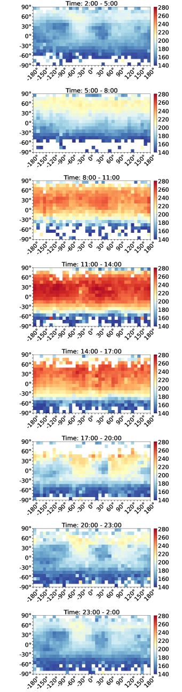
يبين الشكل 1 تغير درجة حرارة السطح اليومية على مدى 30 سولاً عند Ls = 65.8-78.9 (يوليو 2021). ويمثل المحوران الأفقي والرأسي خط العرض وخط الطول بالدرجات، على التوالي. وقد رُمز إلى درجة حرارة السطح بالألوان بوحدات كلفن، والزمن المعروض هو الزمن الشمسي المحلي الحقيقي (LTST). أنشأنا هذه الخرائط بتقسيم الكوكب إلى صناديق خط عرض/خط طول مقدارها . ويبين الشكل B1 في الملحق عدد العينات في كل صندوق مكاني. ثم حصلنا على قيمة درجة الحرارة لكل صندوق بحساب متوسط قياسات درجة حرارة السطح خلال كل من فواصل الزمن البالغة 3 ساعة. وفي كلتا المنطقتين القطبيتين، تكون البيانات فوق 80 شحيحة. وبالنسبة إلى المنطقة القطبية الشمالية، تكون البيانات محدودة جداً بين الساعات 14:00 - 20:00، وبالنسبة إلى المنطقة القطبية الجنوبية، تكون البيانات محدودة جداً بين الساعات 02:00 - 14:00. ويمكن بسهولة ملاحظة التغير واسع النطاق في درجة حرارة السطح عبر الكوكب ضمن خانة زمنية معينة، وكذلك التغيرات العالمية في درجة الحرارة على امتداد السول. وتكون درجات الحرارة في نصف الكرة الشمالي أعلى بصورة منهجية، بما يتوافق مع فصل الصيف. وكما هو متوقع، يكون التغير اليومي في درجة الحرارة أوضح ما يكون في العروض الوسطى الشمالية. وتتوفر خرائط درجات الحرارة العالمية للأشهر الأخرى في الأشكال B2-B4 في الملحق.
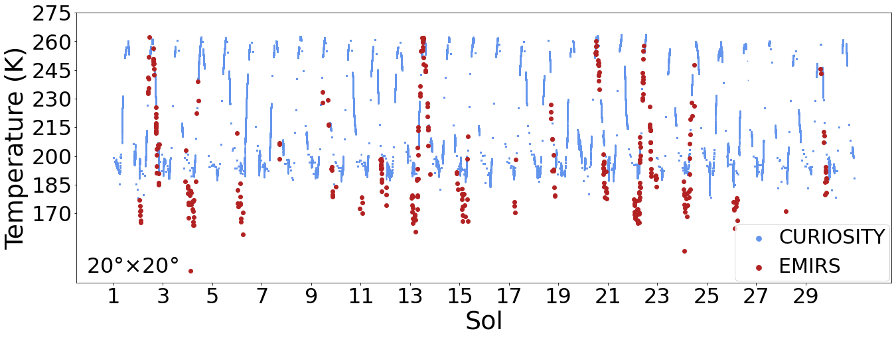
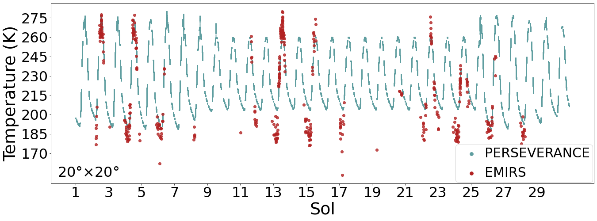
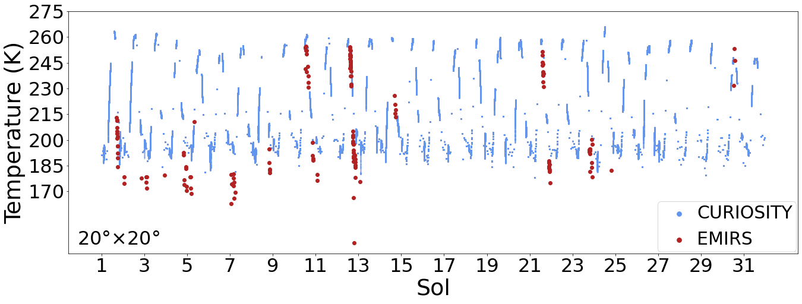
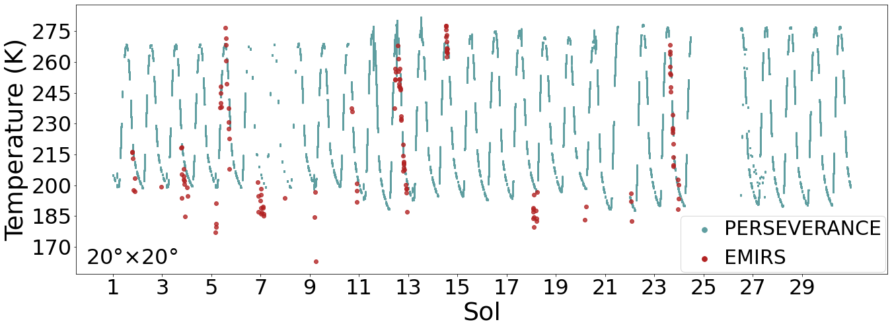
2.2 المركبة الجوالة السطحية: REMS/MSL
يوفر جهاز محطة رصد البيئة الخاصة بالمركبة الجوالة (REMS) (Sebastián et al., 2010) على متن MSL قياسات أرصادية في موقع المركبة الجوالة داخل فوهة Gale على المقاييس اليومية والموسمية (Gómez-Elvira et al., 2012). وتقع فوهة Gale، وهي موقع تشغيل MSL، في رباعي Aeolis عند حافة حد الثنائية. ويبلغ قطرها 154 كم، وتقع عند موقع الهبوط على عمق 4 كم دون المستوى المرجعي، وتضم جبل Sharp الذي يرتفع 1.5 كم فوق المستوى المرجعي. وتتوفر قياسات درجة حرارة الأرض والهواء خلال فترات تتداخل مع رصدات EMM. وتُؤخذ القياسات بواسطة ذراعين موضوعين بصورة متعامدة؛ إذ تحمل الذراع 1 حساس درجة حرارة الهواء (ATS) وحساس درجة حرارة الأرض (GTS)، بينما تحمل الذراع 2 حساس ATS آخر. ويقيس GTS، المثبت على الذراع 1، درجة حرارة السطوع بالأشعة تحت الحمراء للسطح باستخدام ثلاث رُزَم حرارية. ويقيس REMS درجة حرارة سطوع الأرض في نطاق 150-300K بدقة 1 K ودقة تمييز مقدارها 2 K (Martínez et al., 2017). كما تُقاس درجة حرارة الهواء بواسطة الذراعين كليهما بالدقة ودقة التمييز نفسيهما.
حصلنا على البيانات الأولية من ملفات MODRDR (Models RDR) التي تحتوي على منتج بيانات REMS الأعلى مستوى لكل سول. واستُخرجت درجة حرارة سطوع الأرض بوصفها دالة في LTST من السولات 3018 إلى 3224، بإجمالي 207 سولاً للسنة المريخية MY 36، Ls = 1.1 - 92.5. وكشف تنظيف أولي لمجموعة البيانات عن متوسط قدره 1959 قيماً معدومة في كل سول، مع مدى من 845 إلى 10246 صفاً. وأسفر ذلك عن متوسط قدره 23180 قراءة مأخوذة بمعدل 1 Hz لكل سول. وجُمعت نقاط البيانات أولاً بحسب الشهر (للاتساق مع EMM SDC)، ثم بحسب فواصل زمنية ساعية خلال اليوم. ولكل فاصل ساعي، حُسبت قيم المتوسط والحدين الأدنى والأقصى، فضلاً عن الخطأ المعياري، ورُسمت في الرسوم البيانية التالية.
2.3 المركبة الجوالة السطحية: MEDA/Mars 2020
توفر مجموعة حساسات محلل الديناميات البيئية للمريخ (MEDA) على متن المركبة الجوالة Mars 2020 بيانات أرصادية مستمرة من فوهة Jezero، بما في ذلك قياسات درجة حرارة السطح (Rodriguez-Manfredi et al., 2021). ويبلغ قطر فوهة Jezero مقدار 49 كم وتقع في حوض Isidis (1500 كم) على حد الثنائية. وتتأثر الدورة الجوية القريبة من السطح بالطبوغرافيا المحلية والإقليمية (Newman et al., 2021; Pla-García et al., 2020; Newman et al., 2022). ويُعد حساس الأشعة تحت الحمراء الحرارية (TIRS) (Sebastián et al., 2021) جزءاً من MEDA، وهو مقياس إشعاع بالأشعة تحت الحمراء (IR) يقيس درجة حرارة سطوع السطح. وعلى وجه الخصوص، يوفر IR5 درجة حرارة الأرض بقياسه في حزمة 8-14 m، مع مدى ديناميكي قدره 173-293 K، ودقة مقدارها 0.75 K، ودقة تمييز مقدارها 0.08 K.
استُخرجت درجة حرارة سطوع الأرض بوصفها دالة في LTST من TIRS بين السولين 15 و188، بما يقابل السنة المريخية MY 36، Ls = 13-92. وعلى الرغم من توفر البيانات ابتداءً من 18 فبراير 2021، لم يكن TIRS منشوراً خلال السولات القليلة الأولى؛ لذلك بدأنا تحليلنا من مارس 6. ووجدنا أن نقاط البيانات كانت مفقودة في 7 سولات: السولات 23 و24 و25 و26 و27 في مارس، والسول 97 في مايو، والسول 183 في أغسطس، مما أدى إلى إجمالي قدره 167 سولاً أُدرجت في التحليل. ثم أُزيلت من التحليل الفواصل الزمنية المقابلة للسول 168 (14:00-16:30)، والسول 177 (14:00-15:00)، والسولات 159 و161 و163 و167 و169 و171 (03:00-04-00)، وذلك بسبب أنشطة المعايرة التي أدت إلى قيم غير ممثلة Martínez (2022). وكشف هذا التنظيف الأولي عن متوسط قدره 45518 نقطة بيانات لكل سول، مع مدى من 4207 إلى 59135 صفاً، ويتضمن 0 قيماً معدومة. وجُمعت نقاط البيانات أولاً بحسب الشهر (للحفاظ على الاتساق مع EMM SDC)، ثم بحسب فواصل زمنية ساعية خلال اليوم. ولكل فاصل ساعي، حُسبت قيم المتوسط والحدين الأدنى والأقصى، فضلاً عن الخطأ المعياري، ورُسمت في الرسوم البيانية التالية.
2.4 قاعدة بيانات مناخ المريخ MCD
توفر قاعدة بيانات مناخ المريخ (MCD) بيانات متوسطة عن المتغيرات الأرصادية الرئيسة مثل الضغط ودرجة الحرارة والكثافة الجوية والرياح Millour et al. (2018). وهي مشتقة من Laboratoire de Météorologie Dynamique LMD-GCM Wolfgang and Lopez (2015)، وهو نموذج مناخ عالمي (GCM) للمريخ يتضمن نموذجاً لدورة الماء، ونموذجاً كيميائياً، ونموذجاً للغلاف الحراري، ونموذجاً للغلاف الأيوني. وتوفر القاعدة التغيرية من يوم إلى آخر للمتغيرات الأرصادية الرئيسة، وتُستخدم على نطاق واسع في مجتمع أبحاث المريخ. وبالإضافة إلى مخرجات GCM، توفر بيانات بيئية عالية الدقة، وتغيرية من سنة إلى أخرى، وتغيرات في محتوى الغبار، ودورات موسمية ويومية للمتغيرات الأرصادية الأساسية. ونستخرج التغير اليومي في درجات حرارة السطح من MCD في موقعي مركبتي Curiosity وPerseverance الجوالتين عند فوهتي Gale وJezero، على التوالي، بغرض مقارنتها برصدات درجة الحرارة من EMIRS. ويبين الشكل C1 في الملحق موقعي مركبتي Curiosity وPerseverance الجوالتين.
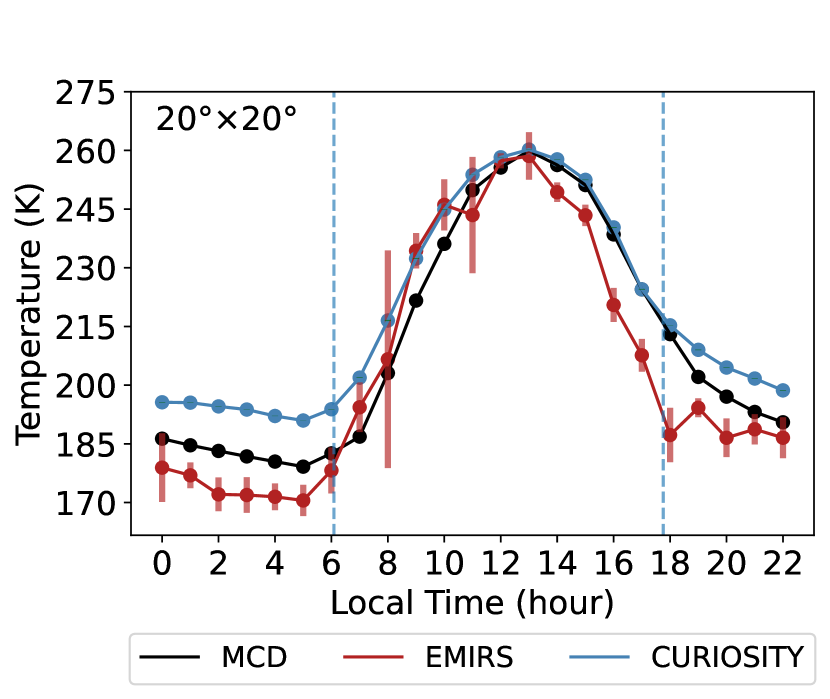
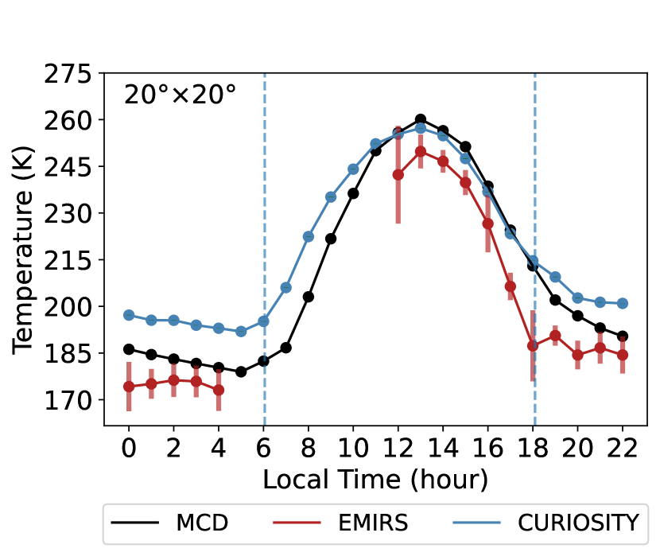
3 مقارنة القياسات
3.1 EMM وMSL وMCD
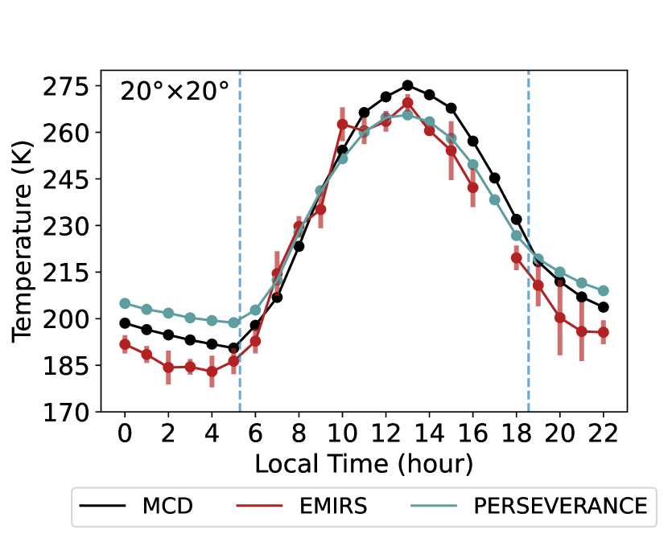
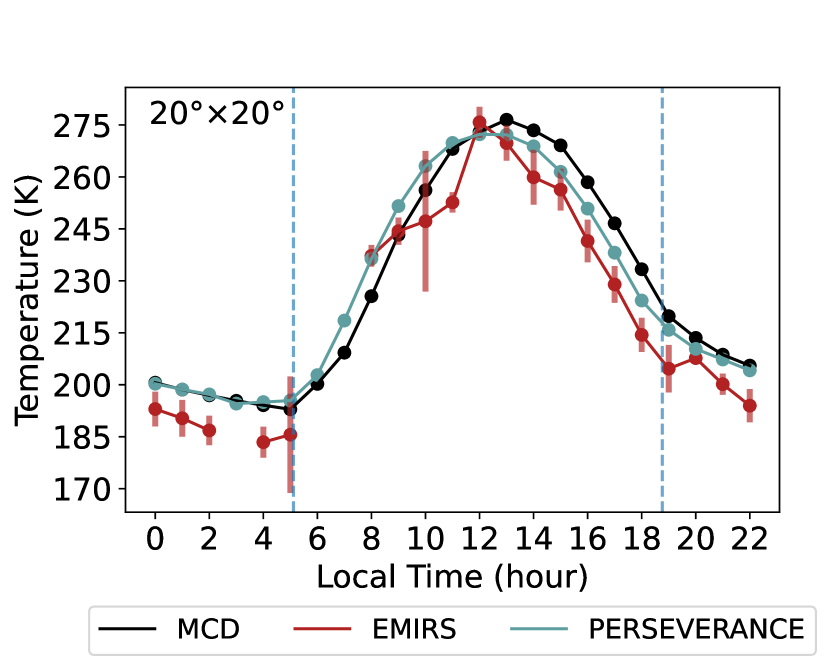
يبين الشكل 2 مقارنات قياسات درجة حرارة السطح الساعية من REMS وEMIRS في موقع المركبة الجوالة MSL عند (فوهة Gale) على مدى 30 سولاً عند Ls = 65.8-78.9 (يوليو 2021) و79.3-92.5 (أغسطس 2021)، على التوالي. ونأخذ عينات قياسات درجة الحرارة من EMIRS من مناطق و و و و و و متمركزة حول موقع MSL. وحيثما تتوفر رصدات EMIRS، تُظهر درجات الحرارة العظمى توافقاً جيداً، في حين تكون أدنى درجات الحرارة المسجلة بواسطة REMS أعلى قليلاً. ويبين الشكل 3 درجات الحرارة اليومية المتوسطة المقابلة، إلى جانب درجات الحرارة التي يتنبأ بها نموذج MCD في موقع المركبة الجوالة MSL. ونمط التغير اليومي المتوسط متماثل في قياسات درجة الحرارة لكل من EMIRS وREMS ومتسق مع تنبؤات نموذج MCD. تبدأ درجات الحرارة اليومية المتوسطة بالارتفاع عند الساعة 05 وتبلغ قيمة عظمى تقارب 250K نحو الساعة 13 في جميع الحالات. وتنخفض قياسات درجة الحرارة من EMIRS بسرعة أكبر بعد الذروة، وبوجه عام تكون درجات حرارة ما بعد الظهر والمساء والليل أدنى بوضوح مقارنة بقياسات REMS ونموذج MCD. وتتسق درجات الحرارة المسجلة بواسطة REMS عموماً مع تنبؤات نموذج MCD في الصباح وما بعد الظهر. غير أنها أعلى منهجياً من تنبؤات نموذج MCD خلال الليل. وتختلف أدنى درجات الحرارة المتوسطة اختلافاً ملحوظاً، إذ تبلغ 170 K و180 K و190 K لكل من EMIRS وMCD وREMS، على التوالي.
3.2 EMM وMars 2020 وMCD
يبين الشكل 2 مقارنات قياسات درجة حرارة السطح الساعية من MEDA وEMIRS في موقع المركبة الجوالة Perseverance (فوهة Jezero) على مدى 30 سولاً عند Ls = 65.8-78.9 (يوليو 2021) و79.3-92.5 (أغسطس 2021)، على التوالي. وبالمقارنة مع EMIRS، تُظهر قياسات درجة الحرارة من Perseverance تغيرية يومية منخفضة بين الحدين الأعلى والأدنى، وتكون هذه التغيرية منخفضة بوجه خاص للسولات 10-25 في يوليو. ويبين الشكل 4 التغير اليومي المتوسط المقابل في درجة الحرارة، إلى جانب درجات الحرارة التي يتنبأ بها نموذج MCD في موقع المركبة الجوالة Perseverance. ونمط التغير اليومي المتوسط متماثل في قياسات درجة الحرارة لكل من EMIRS وCuriosity ومتسق مع تنبؤات نموذج MCD. وتبدأ درجات الحرارة اليومية المتوسطة بالارتفاع من الساعة 04 وتبلغ قيمة عظمى نحو الساعة 13 في جميع الحالات. وتكون قيم درجة الحرارة العظمى المسجلة بواسطة EMIRS وPerseverance متساوية تقريباً، وهي أدنى بمقدار 10 K من درجة الحرارة العظمى لنموذج MCD البالغة 270 K. ويتنبأ نموذج MCD بدرجات حرارة بعد الظهر أعلى منهجياً بمقدار 10K مقارنة بـ EMIRS، مع وقوع درجات الحرارة التي حصلت عليها Perseverance بينهما. وتظل درجات الحرارة الليلية المسجلة بواسطة EMIRS أدنى مقارنة بنموذج MCD، في حين تكون قياسات درجة الحرارة من Perseverance أعلى قليلاً. وتبلغ أدنى درجات الحرارة المسجلة بواسطة EMIRS وMCD وPerseverance مقدار 180 K و 190 K و 200 K، على التوالي. وتعرض الأشكال C2-C5 في الملحق مقارنات درجة حرارة السطح الساعية من EMIRS مع رصدات Curiosity وPerseverance للأشهر الأخرى، فضلاً عن مجالات رؤية (FOV) أصغر لـ EMIRS حول مواقع المركبات الجوالة. وتعرض الأشكال D2-D5 في الملحق المقارنات المقابلة لدرجات الحرارة اليومية المتوسطة.
4 الخلاصة والمناقشة
مكنتنا رصدات EMM، للمرة الأولى، من دراسة درجات حرارة السطح عند جميع الأزمنة المحلية في معظم مواقع المريخ. وقد أتاح ذلك مقارنة رصدات EMM/EMIRS المأخوذة من المدار في أزمنة متداخلة مع قياسات المركبتين الجوالتين السطحيتين MSL وMars 2020. ونجد أن الاتجاه العام في تغيرية درجة الحرارة اليومية متسق بين المهمات المختلفة، وكذلك مع تقديرات MCD. وتتوافق التغيرية الساعية لدرجة حرارة EMIRS جيداً مع MSL. ومع ذلك، فإن قياسات EMIRS أدنى منهجياً، ولا سيما في أوقات الليل عند أدنى درجات الحرارة. وقد توجد عدة أسباب تؤدي إلى هذا التباين في القياسات. تتمثل إحدى القضايا المحتملة في هذا التحليل في الفارق الكبير بين مجال رؤية EMIRS (كما نوقش سابقاً) ومجال رؤية المركبات الجوالة. وعلى الرغم من أن قياسات المركبات الجوالة حساسة للتغيرية الناشئة عن السمات المحلية صغيرة المقياس والسمات الإقليمية واسعة المقياس معاً، فإن EMIRS حساس للسمات الإقليمية واسعة المقياس فقط. وداخل مجال رؤية EMIRS، قد توجد وحدات جيولوجية متعددة ذات عطالة حرارية وخشونة سطحية متباينتين (انظر الأشكال E1-E3 في الملحق). ومن شأن اختلاف العطالة الحرارية للصخور والغبار والرمال أن يؤدي إلى معدلات غير متجانسة لتغير درجة الحرارة، بما يؤثر في تغير درجة الحرارة اليومي. كذلك فإن درجة حرارة السطوع المستخلصة من الرصدات حساسة بشدة لوفرة الصخور، ولا سيما ليلاً (Wolfe et al., 2022). وقد وجد عمل أولي قام به Wolfe et al. (2022) أن رصدات EMIRS حساسة لوفرة الصخور، وخصوصاً قرب خط الاستواء ومناطق العروض الوسطى. ويعتمد التشتت والانبعاث السطحيان أيضاً على خشونة السطح، وهو ما يؤدي بدوره إلى اختلافات في القيم المقدرة لدرجة حرارة السطح. أما الانعطافات التي تبدو غير مألوفة في بيانات EMIRS المتوسطة (الأشكال 3 و 4)، فهي أثر اصطناعي ناجم عن أخذ عينات مكانية غير منتظم من مجال الرؤية الأكبر، وتختفي عند مجالات الرؤية الأصغر كما يظهر في الشكلين D4 وD5 في الملحق. وتكون أعداد الرصدات المقابلة أقل وأشرطة الخطأ أكبر، ومن ثم فإن هذه القمم الظاهرية ليست ذات دلالة بالنسبة إلى اتجاهات تغير درجة الحرارة اليومي التي نوقشت.
تُؤخذ رصدات EMIRS ذات حجم الشبكة الأصغر في بيئة حرارية مشابهة لبيئة المركبات الجوالة عند حساب المتوسط على مدى فترة زمنية. وبصفته جهازاً على متن مركبة مدارية، فإن الدقة المكانية المنخفضة تمثل قيداً على EMIRS. ومع زيادة الرصدات التي تجريها المركبة المدارية، نأمل في بناء صورة أفضل للبيئة الحرارية للمريخ، مما سيمكن أيضاً من إجراء مقارنة أفضل مع قياسات المركبات الجوالة. ويلزم إجراء مزيد من العمل من أجل فصل تأثير السمات الإقليمية عن السمات المحلية، والتمييز بين وحدات الصخور المختلفة وعوامل أخرى مثل خشونة السطح التي قد تؤثر في تقديرات درجة حرارة السطح، ويمثل هذا التحليل خطوة أولى مهمة في ذلك الاتجاه. إضافة إلى ذلك، تتباين تقديرات نماذج المناخ نفسها تبايناً كبيراً؛ فعلى سبيل المثال، لوحظ فرق يصل إلى 10 K في درجة حرارة السطح بين تسعة نماذج مختلفة في منطقة فوهة Jezero (Newman et al., 2021). ومن خلال هذا العمل القائم على مقارنة الرصدات المأخوذة من المدار بتلك المأخوذة من السطح، نأمل في تقييد النماذج على نحو أفضل بما يؤدي إلى تقدم في نمذجة الطقس والمناخ، وخصوصاً الفروق بين النماذج. ونخطط لمقارنة التغيرات الموسمية المرصودة بين المهمات المختلفة خلال سنة مريخية واحدة، وهي أيضاً مدة المهمة الرئيسة لـ EMM. وسيساعد هذا الجهد كذلك في تحسين التخطيط للمهمات الروبوتية المستقبلية (Fonseca et al., 2019)، فضلاً عن المهمات المأهولة إلى الكوكب (Drake et al., 2010).
توافر البيانات
حُصل على بيانات EMM من مركز البيانات العلمية لـ EMM (SDC)، وعلى بيانات MSL وMars 2020 من نظام البيانات الكوكبية (PDS) التابع لـ NASA، وكلاهما مستودعان مفتوحا الوصول.
الشكر والتقدير
دُعم هذا العمل بمنحة الأبحاث G1502 من معهد New York University Abu Dhabi (NYUAD)، وبمنحة S1560 من جائزة ASPIRE للتميز البحثي (AARE) المقدمة من Advanced Technology Research Council (ATRC). واستخدم هذا العمل موارد الحوسبة عالية الأداء (HPC) في NYUAD. ونشكر الأستاذ K. R. Sreenivasan على تشجيعه ودعمه المستمرين للمشروع.
References
- Emirates mars mission characterization of mars atmosphere dynamics and processes. Space Science Reviews 217 (8), pp. 1–31. Cited by: §1, §1.
- The emirates mars mission. Space Science Reviews 218 (1), pp. 1–46. Cited by: §1, §1.
- Indian mars orbiter mission. 40th COSPAR Scientific Assembly 40, pp. C3–2. Cited by: §1.
- Mars global surveyor thermal emission spectrometer experiment: investigation description and surface science results. Journal of Geophysical Research: Planets 106 (E10), pp. 23823–23871. Cited by: §1.
- Human exploration of mars, design reference architecture 5.0. In 2010 IEEE Aerospace Conference, pp. 1–24. Cited by: §4.
- The emirates mars mission (emm) emirates mars infrared spectrometer (emirs) instrument. Space science reviews 217 (7), pp. 1–50. Cited by: §1, §2.1.
- The thermophysical properties of the bagnold dunes, mars: ground-truthing orbital data. Journal of Geophysical Research: Planets 123 (5), pp. 1307–1326. Cited by: §1.
- MARSWRF prediction of entry descent landing profiles: applications to mars exploration. Earth and Space Science 6 (8), pp. 1440–1459. Cited by: §4.
- The planetary fourier spectrometer (pfs) onboard the european mars express mission. Planetary and Space Science 53 (10), pp. 963–974. Cited by: §1.
- REMS: the environmental sensor suite for the mars science laboratory rover. Space science reviews 170 (1), pp. 583–640. Cited by: §1, §1, §2.2.
- Surface kinetic temperatures and nontronite single scattering albedo spectra from mars reconnaissance orbiter crism hyperspectral imaging data over glen torridon, gale crater, mars. Journal of Geophysical Research: Planets, pp. e2021JE007092. Cited by: §1.
- Meteorological results from the surface of mars: viking 1 and 2. Journal of Geophysical Research 82 (28), pp. 4559–4574. Cited by: §1.
- Atmospheric loss to space and the history of water on mars. Annual Review of Earth and Planetary Sciences 49, pp. 71–93. Cited by: §1.
- The atmospheric chemistry suite (acs) of three spectrometers for the exomars 2016 trace gas orbiter. Space Science Reviews 214 (1), pp. 1–62. Cited by: §1.
- Note: Personal communication Cited by: §2.3.
- The modern near-surface martian climate: a review of in-situ meteorological data from viking to curiosity. Space Science Reviews 212 (1), pp. 295–338. Cited by: §2.2.
- Thermal inertia and albedo at jezero crater as observed from the mars 2020 meda instrument. LPI Contributions 2678, pp. 2024. Cited by: §1.
- The surface energy budget at gale crater during the first 2500 sols of the mars science laboratory mission. Journal of Geophysical Research: Planets 126 (9), pp. e2020JE006804. Cited by: §1.
- Temperature fluctuations and boundary layer turbulence as seen by mars exploration rovers miniature thermal emission spectrometer. Icarus 360, pp. 114350. Cited by: §1.
- Mars climate database. In From Mars Express to ExoMars, 27-28 February 2018, Madrid, Spain, Cited by: §1, §2.4.
- Multi-model meteorological and aeolian predictions for mars 2020 and the jezero crater region. Space science reviews 217 (1), pp. 1–68. Cited by: §2.3, §4.
- The dynamic atmospheric and aeolian environment of jezero crater, mars. Science Advances 8 (21), pp. eabn3783. Cited by: §2.3.
- The martian atmospheric boundary layer. Reviews of Geophysics 49 (3). Cited by: §1.
- Soil thermophysical properties near the insight lander derived from 50 sols of radiometer measurements. Journal of Geophysical Research: Planets 126 (8), pp. e2021JE006859. Cited by: §1.
- Meteorological predictions for mars 2020 perseverance rover landing site at jezero crater. Space science reviews 216 (8), pp. 1–21. Cited by: §2.3.
- The mars environmental dynamics analyzer, meda. a suite of environmental sensors for the mars 2020 mission. Space science reviews 217 (3), pp. 1–86. Cited by: §1, §1, §2.3.
- Earth and mars: evolution of atmospheres and surface temperatures. Science 177 (4043), pp. 52–56. Cited by: §1.
- The rover environmental monitoring station ground temperature sensor: a pyrometer for measuring ground temperature on mars. Sensors 10 (10), pp. 9211–9231. Cited by: §2.2.
- Thermal calibration of the meda-tirs radiometer onboard nasa’s perseverance rover. Acta Astronautica 182, pp. 144–159. Cited by: §2.3.
- Surface and near-surface atmospheric temperatures for the mars exploration rover landing sites. Icarus 180 (2), pp. 314–320. Cited by: §1.
- The heat flow and physical properties package (hp3) for the insight mission. Space Science Reviews 214 (5), pp. 1–33. Cited by: §1.
- ESA exomars program: the next step in exploring mars. Solar System Research 49 (7), pp. 518–528. Cited by: §1.
- Assessing the Sub-Pixel Sensitivity of Atmospheric Retrievals from the Emirates Mars Infrared Spectrometer. In LPI Contributions, LPI Contributions, Vol. 2678, pp. 2804. Cited by: §4.
- How rocky are they? the composition distribution of kepler’s sub-neptune planet candidates within 0.15 au. The Astrophysical Journal 806. Cited by: §2.4.
- Mars exploration program. Presentation to the National Academies 28. Cited by: §1.
Appendix A مقارنة درجة حرارة السطح من EMIRS بين L2 وL3
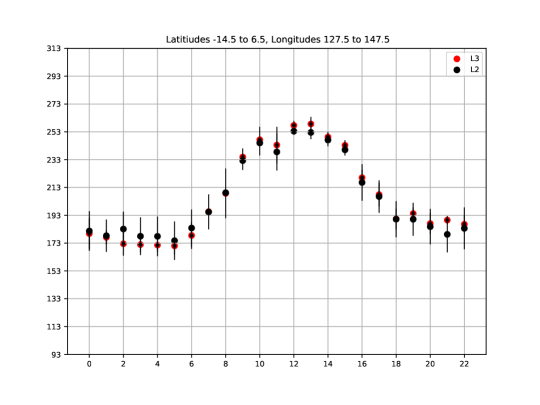
Appendix B قياسات درجة حرارة السطح العالمية
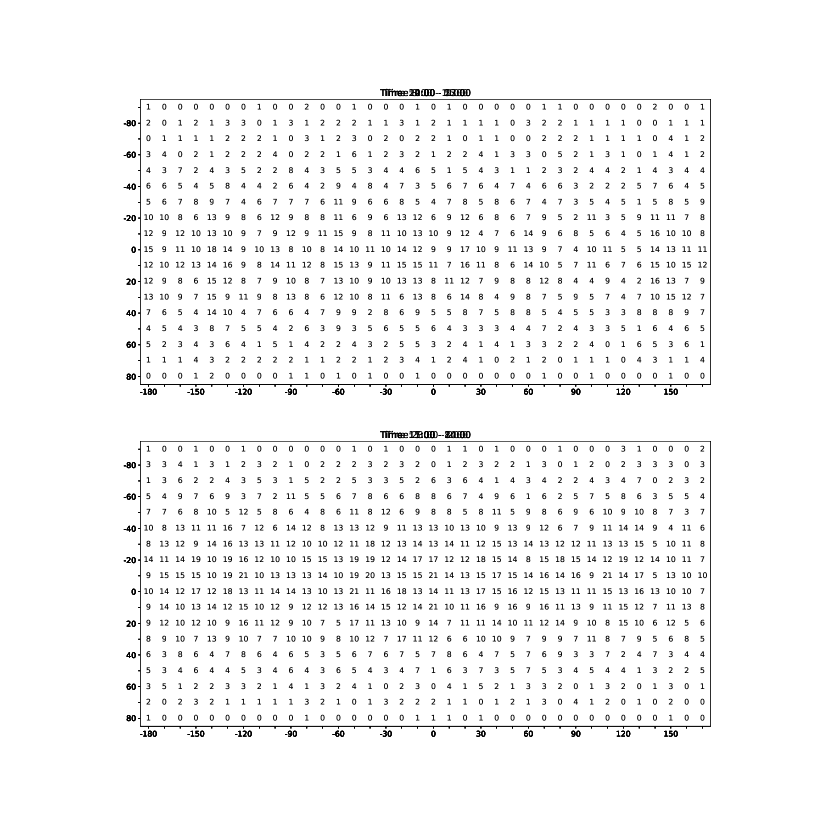
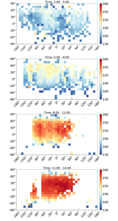
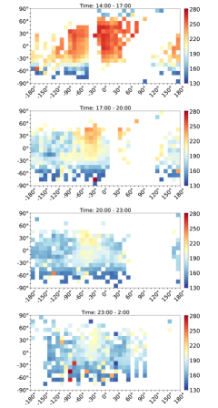
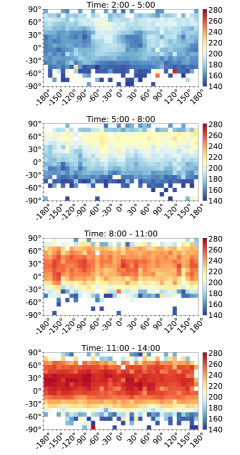
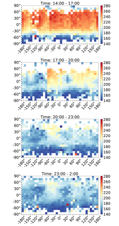
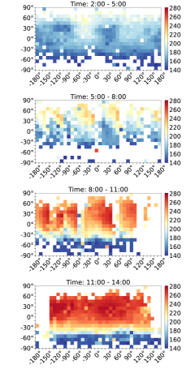
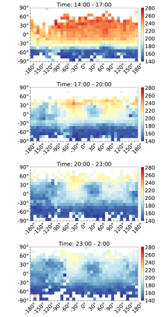
Appendix C مقارنات درجة الحرارة الساعية
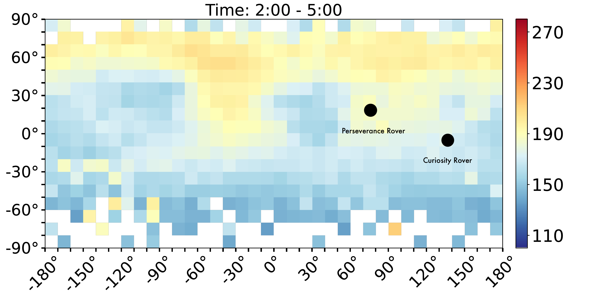
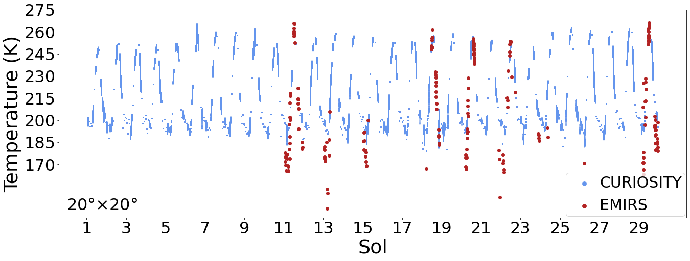
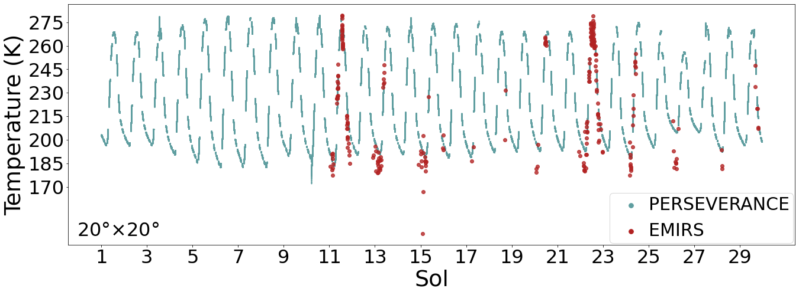
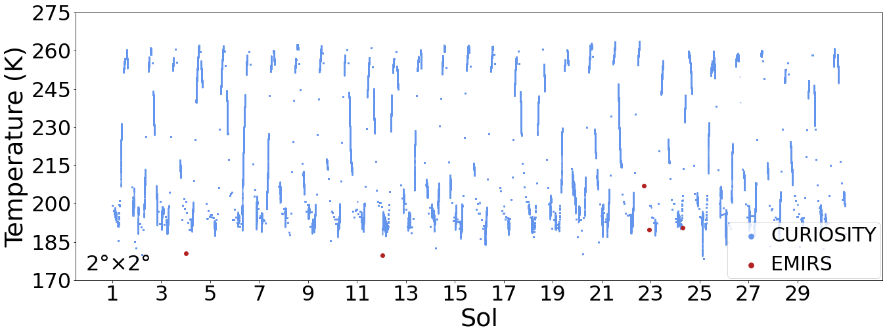
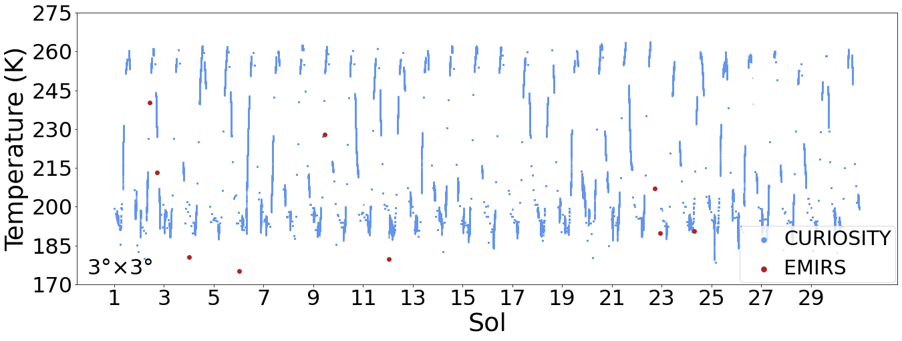
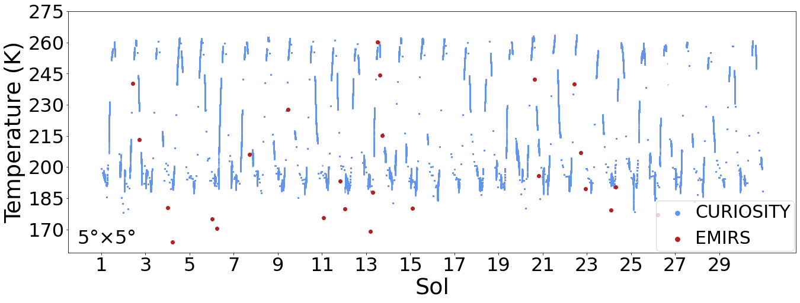
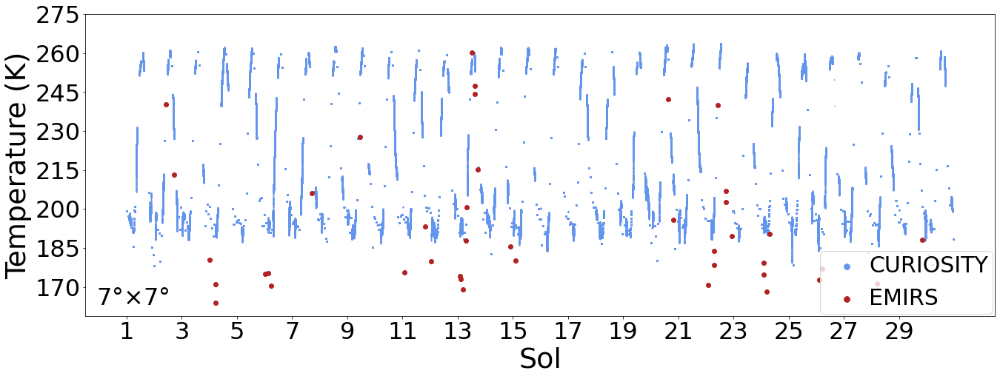
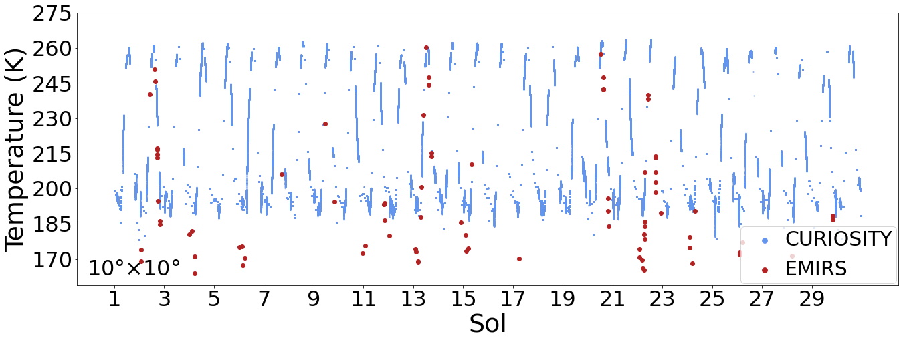
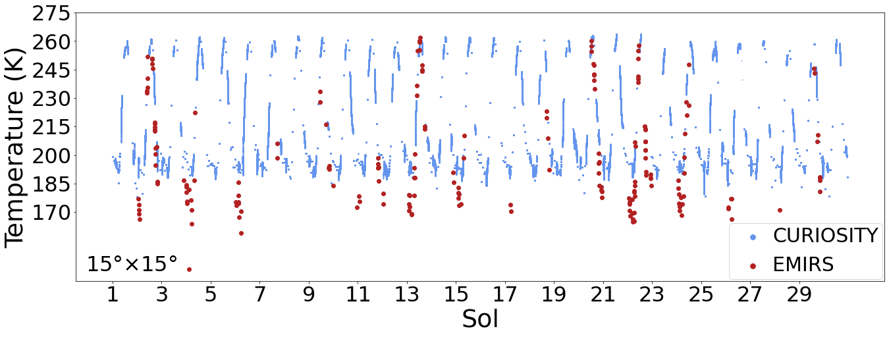
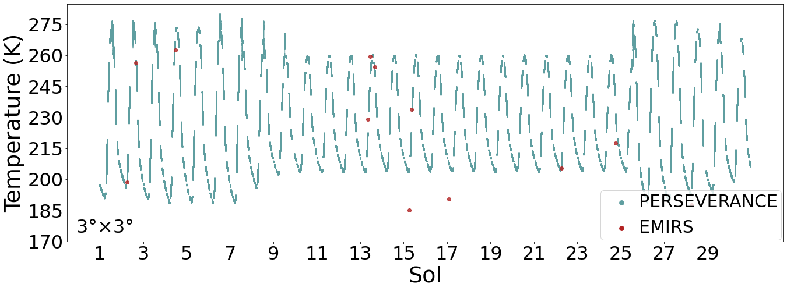
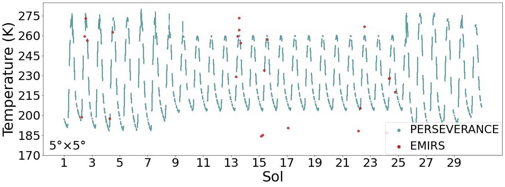
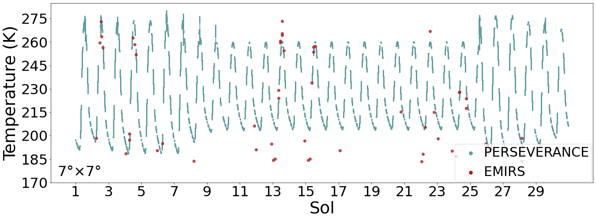
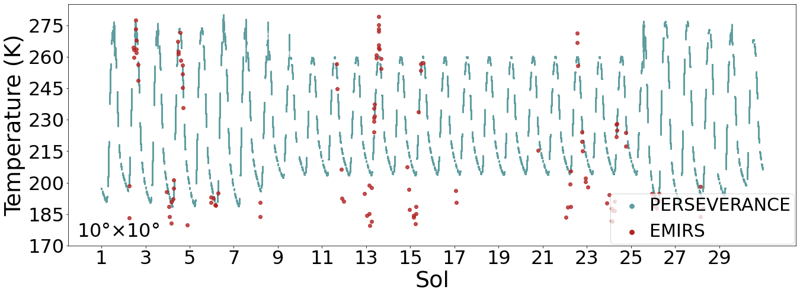
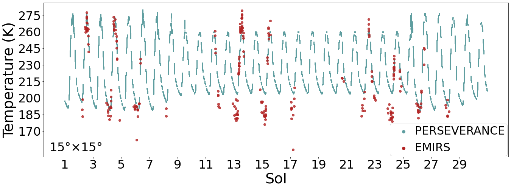
Appendix D التغطية اليومية بوصفها دالة في حجم الشبكة المكانية لاختيار رصدات EMIRS حول مواقع هبوط مركبتي Curiosity وPerseverance الجوالتين.
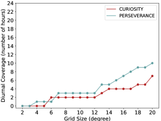
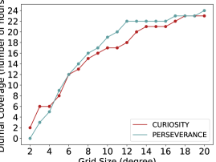
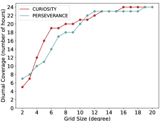
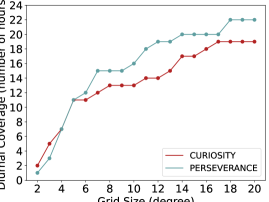
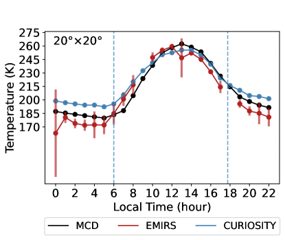
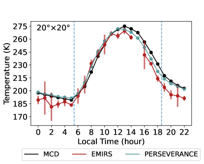
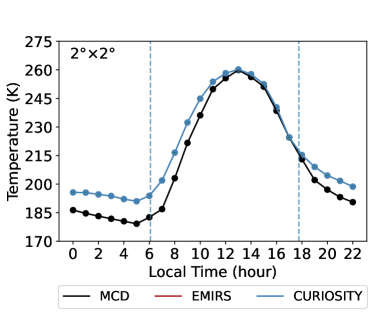
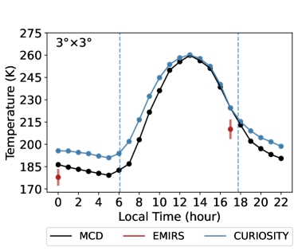
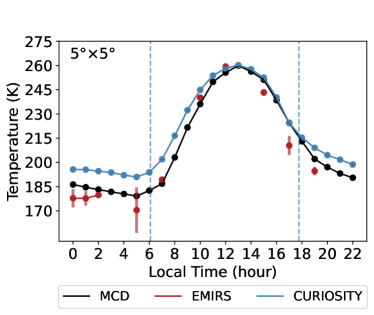
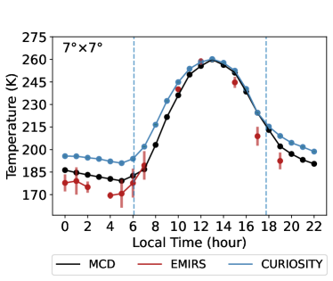
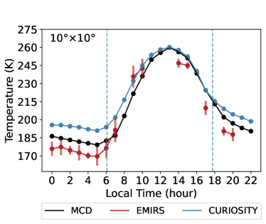
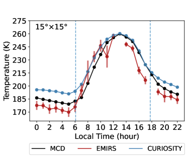
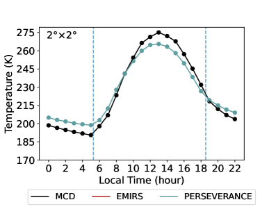
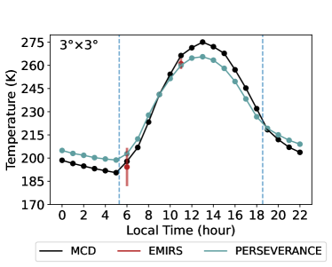
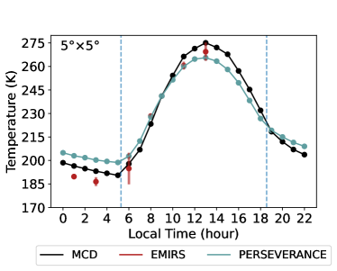
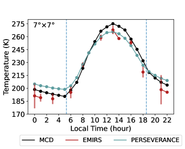
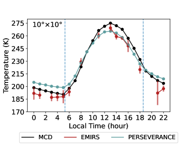
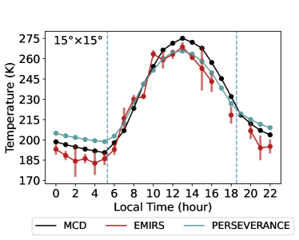
Appendix E مقارنات العطالة الحرارية
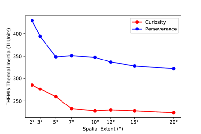